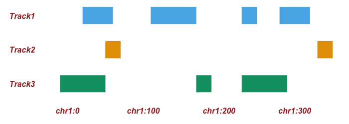
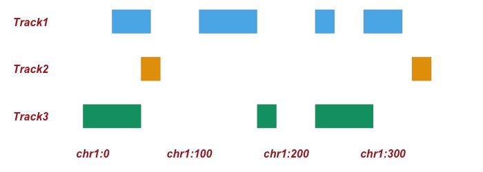
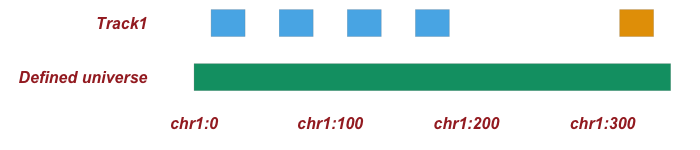

Home
Documentation
Examples
Parameters
Input & Output
About
genomic-permutation-tools
– a collection of permutation approaches for shuffling genomic regions
Glance at algorithms in action
Between tracks

Within tracks

Block shuffling
Preserve clumping
Predefined universe

Quick start
Upload datasets
Go to Tool page and select permutation approach
Download results
Watch a 1 min screencast